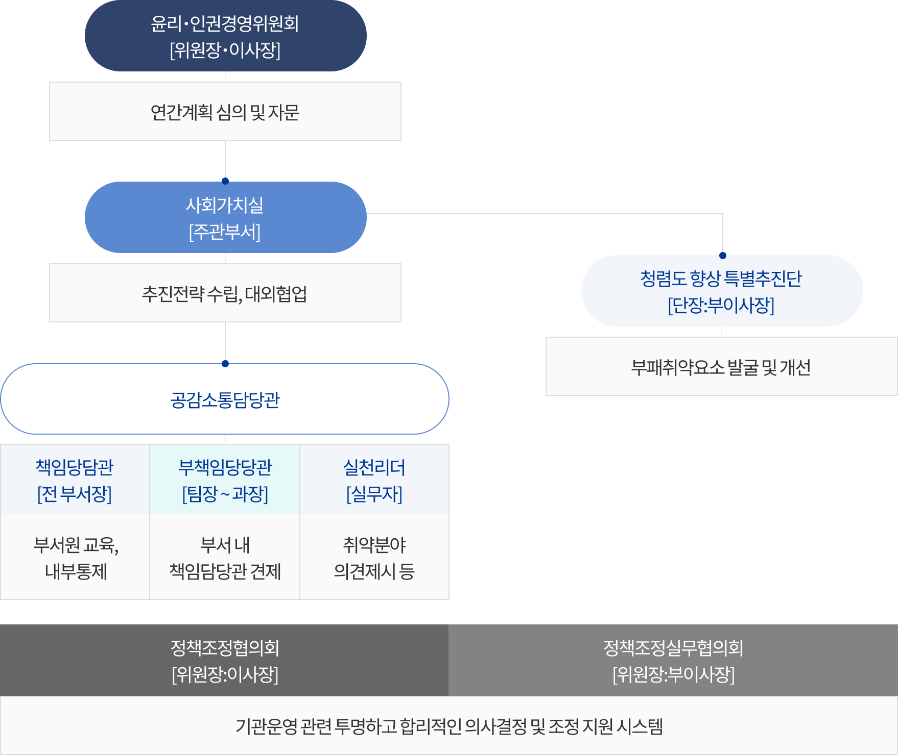

추진조직


윤리경영 추진조직

조직별 역할
- 심의기구
-
- 윤리·인권 경영위원회 : 윤리경영 추진실적 및 차년도 추진계획 점검 및 평가
- 전담조직
-
- 사회가치실 : 윤리경영체계 확립(조직, 규범, 전략 등), 윤리경영활동(문화활동, 교육, 상담, 신고채널운영 등) 등
- 협업조직
-
- 감사실 : 내부견제, 반부패 청렴, 청탁금지법, 청렴도 평가, 부패방지시책평가
- 리스크준법처 : 정책자금 준법 자율준수체계 운영
- 실행기구
-
- 공감소통담당관 : 조직원과 소통을 통한 조직 내 윤리인권리스크 사전 예방 및 관리
- 윤리인권경영 책임담당관 : 부서원 교육 등 문화전파, 내부통제
- 윤리인권경영 부책임담당관 : 이사장님 직통채널을 활용한 의견 제시로 책임담당관 견제 기능 수행
- 윤리인권 실천리더 : 윤리·인권경영활동 집중 추진 및 부서 전파
- 기관운영 의사결정 기구
-
- 정책조정협의회 : 기관운영 관련 중요 정책, 부서·사업 간 협의 및 조정이 필요한 현안사항 등 심의
- 정책조정 실무협의회 : 정책조정협의회에 따른 의결사항 이외 안건 심의
정보담당자
사회가치실 김기홍
연락처
055-751-9354
문의처
중소기업통합콜센터(국번없이 1357)
콘텐츠 만족도